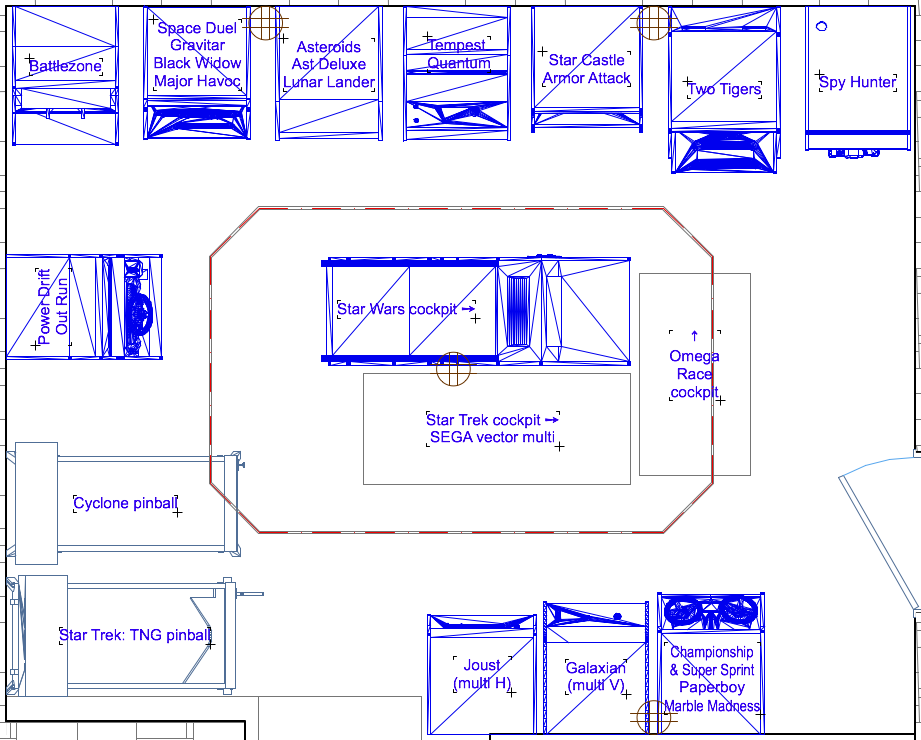

Video walkthrough! Also, the Quantum repro PCB is currently playing well in the Tempest cab using an adapter PCB and temporary control panel - but can be swapped back to Tempest with no harm done.
Due to popular demand, we picked up a Spy Hunter to replace the one I gave away. Cabinet has been reglued, Cheap Squeak fixed, replaced PS caps to eliminate reduce hum and fixed loose ground wire to get the marquee lit. Still has this weird intermittent problem where the game will freeze with a black screen and then return (right where it stopped) and continue playing.
Carpet has been installed and the power outlets installed. Since there are no finished walls, the outlets for the games are installed in the ceiling, with two duplex outlets (4 games) per circuit. Eight foot extension cords hang straight down along the wall behind the center of each game. This omits clutter while still allowing the games to be pulled out for service (made simply by the installation of these roller bearings)
Two flourescent shop lights can be used to brightly light the room; but they are kept off most of the time. The lighting plan was to have blacklights and RGB LEDs bouncing off a small disco ball... turns out the LED strips are so diffuse they do not work with a disco ball. Upon further, ah, reflection, I'm glad it didn't work out as we'll now go with a more subdued scheme where the lighting strips lie in an aluminum track and shine up to be bounced off the ceiling (shown as the eight-sided figure in the center). The controller allows for various color changing patterns (my favorite is the slow crossfade along the RGB spectrum) or keying off the ambient noise in the room (where frequency changes color and volume changes brightness - will have to test in the actual environment).
Almost all the games are home now - the entire top row of (mostly vector) games as well as Championship Sprint, the Galaxian (which is a vertical multigame using the ArcadeSD board), and all three cockpits. Star Wars did not fit down the outer stairs even with the canopy removed... I carefully split the cab into two halves by removing the sill plates and base, peeling up the carpet, and cutting across the floor. Once both halves were inside, I screwed two beams inside the existing bracing in the floor cavity, reattached the base, and put the carpet back down. There is absolutely no visible sign it ever happened. ST:TNG pinball went down in one piece (and now has the Color DMD!).

The Joust cabinet will be a Multi-Williams (converted back from Hydra) and the Power Drift/Outrun will be retrieved from loan this summer. Note there is room for Cyclone to return one day. Anyone have a SketchUp model for Omega Race or Star Trek cockpit?
Asteroids / Asteroids Deluxe / Lunar Lander multigame analog thruster control interface: shipping!
this is an add-on to the upcoming Braze Technology kit. Play LL with an original style thruster handle instead of buttons.
Omega Race reproduction PCB: A total of 28 boards were produced and sold, one fully assembled. Story here and here. Buyers' builds here.
WG6100 HV repro board (P329): board layout done but where to get the transformer (T901)? Is it the same as Amplifone T1?
Conversion board to run current DAC312 in place of hard-to-find AD561 DAC: protoype boards arrived! Will build and test soon.
HP 10529a original repro cards: Now available. Includes a few extra features for ease-of-use.
New project (in development): Logic comparator (like the HP10529a) but good for chips with 20 pins (new card). Backwards compatible with original cards.
Amplifone 25" from an old TV: done!
WG6100 yoke winding: investigating.
Adapters: Quantum PCB to Tempest cabinet, Asteroids PCB to Space Duel Cabinet, Major Havoc (either PCB) to Space Duel Cabinet (with Amplifone - no correction)
Power: harness to use switching power supply for Omega Race PCB.
I repair vector game PCBs and monitors. However, repair work is currently on hold until the basement is put back together.
Atari System One miscellaneous cabinet parts (coin door, speaker grills, other hardware) $cheap - must inventory
HP5004A Signature Analyzer 100% working with leads, very clean $75
sale pending:
Battlezone conversion kit (change from scope to direct view) $60
{kind=link}
{kind=link}
{kind=link}
{kind=link}
{kind=link}
{kind=link}
{kind=link}
{kind=link}
{kind=link}
{kind=link}